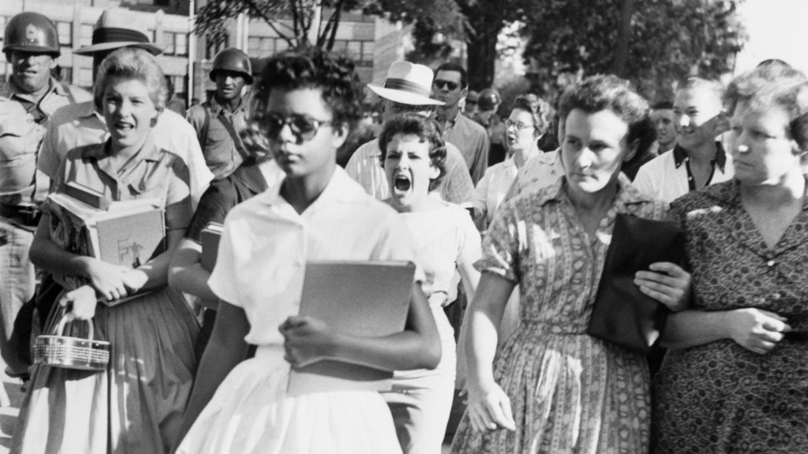
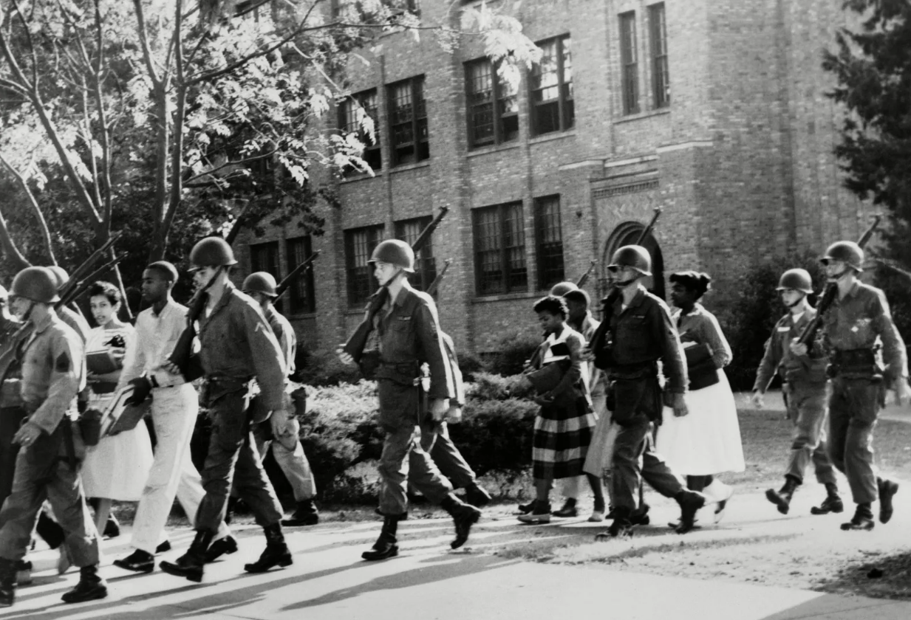
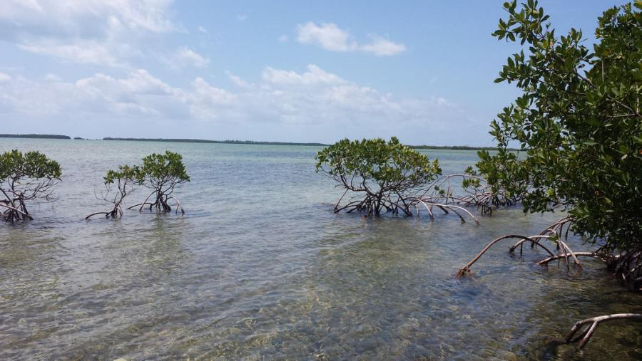
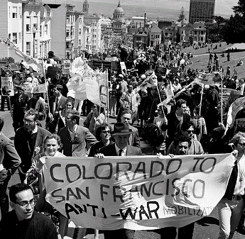
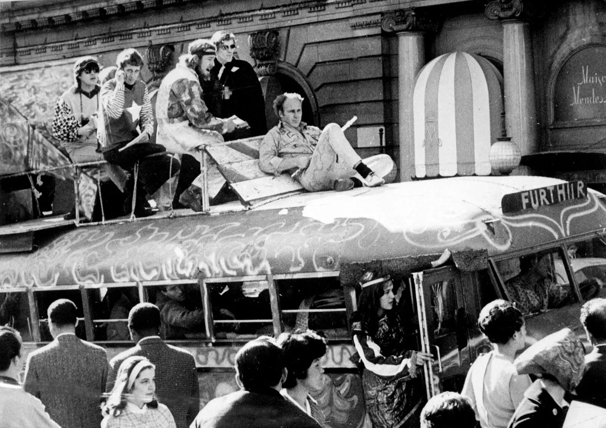

Little Rock 9
The photo of was taken outside Central High School in Little Rock, Arkansas. Central High School was previously an all-white school at the time, and still a predominantly white institution. Little Rock, like many other Southern cities, had fiercely resisted integration, and the school was not immune to this.
On September 4, 1957, the first day the Little Rock Nine attempted to enter Central High School, they were met by angry mobs and members of the Arkansas National Guard, who had been ordered by Governor Orval Faubus to block their entry. The situation outside the school was tense, with crowds of white protesters shouting racist slurs and threats. Despite the presence of the media and photographers, the hostility was palpable, and the images captured that day documented the resistance to desegregation and the presence of the students.
The people in the photo are angry because they were vehemently opposed to the integration of Central High School. The white residents of Little Rock, like many in the South, believed in the racial hierarchy that segregation upheld, and they saw the integration as a direct threat to their way of life. To them, allowing Black students into their schools was not only an attack on their perceived social order but also a challenge to white supremacy. This anger was fueled by racist beliefs and a fear that desegregation would lead to broader social changes that would diminish white power and privileges.

Initially, Governor Orval Faubus had called in the Arkansas National Guard to prevent the Little Rock Nine from entering the school. Faubus, a staunch segregationist, argued that the presence of the Black students would incite violence, and he used this to justify his actions. However, his true intention was to defy the federal mandate for integration and to please to the white electorate that opposed desegregation.
When Faubus’s actions sparked national outrage and the situation in Little Rock continued to deteriorate, President Dwight D. Eisenhower intervened. On September 24, 1957, Eisenhower federalized the Arkansas National Guard and sent members of the 101st Airborne Division to Little Rock to enforce the court’s desegregation order. The soldiers were tasked with protecting the Little Rock Nine and ensuring that they could safely attend school. This was one of the first instances of federal troops being used to uphold civil rights since Reconstruction, and it marked a significant moment in the struggle for racial equality.
Florida Mangroves
The three types of mangroves found in Tampa Bay are the red mangrove, black mangrove, and white mangrove. Red mangroves are known for their prop roots, which extend down into the water and help stabilize the tree. They have lush, pointy green leaves, and they reproduce using propagules that hang down until they fall into the water, where they take root and grow. Red mangroves also have sacrificial yellow leaves that contain excess salt, and fall off to protect the tree from salinity.These leaves eventually fall and are eaten by herbivores. Black mangroves have dark leaves that secrete salt on their undersides and feature aerating roots, known as pneumatophores, which are often referred to as "dead men’s fingers." White mangroves are typically found closest to the shore and have oval-shaped leaves with salt glands that speckle the surface near the base. The roots are also exposed, not to be confused with the black mangrove.

Low energy beach environments have very little vegetation near the water and some further back. They have small ripple waves, coarser sand and shell sentiment, and less diversity due to soft body animals not doing well with the shells. Mangrove environments enjoy low energy systems, often having crunchy and coarse material deeper in the sediment and surviving in smaller waves. However, mangroves differ from low energy beaches by having more vegetation like the mangroves themselves, which also makes more room for increased diversity in life diversity.
One benefit of seagrass is that they provide habitats and protection for fish communities, particularly the juveniles while they mature, and mangroves provide similar benefits to their animal life as well. They both provide sources of food to these organisms as well (like manatees). These plants also provide protection through their baffling effect, keeping sand and sediment in place and protecting our coastline.

The Influence on Rock on the Baby Boomer Generations Activism
Within the college town of San Francisco, a radio station called FM rock emerged, in response to the radio station Top 40s unwillingness to play the popular rock music out of the UK during the late sixties. This radio station had nonstop diverse rock music, ranging from blues to sitar to traditional rock, and personable radio jockeys both male and female. The content of the music on this station was like a forum for issues (albeit often water downed emblematic of known sociopolitical issues) happening to a multitude of communities, packaged in a pleasurable way, and marketed to those who would become entranced by the psychedelic rhythms. The importance of San Francisco for this radio station is because of the fact it is both a military town, as well as a town that filled with young adults packed into campuses with each other, and well-known civil rights activists within the Black community. These demographics, combined with the inviting social warmth and care of others' wellbeing that came from both radio stations and subsequent music festivals, made for the perfect cocktail for a social activist upcoming generation.

The culture of rock music is one that is very warm, welcoming, and politically active. Considered one of the most progressive communities at the time, it was a place in which both people of color and women felt it was a safe space to communicate their ideas and feel like equals among their counterparts. It was also something that emphasized international relations as well. For example, a part of the inspiration in activism from young adults that relates directly to the protests of the Vietnam war stems from the Saigon Rock and Roll music that was popular among rock circles in the US. Those who were fans of rock and roll were considering themselves citizens of the world, a thought process that was nourished by a community that “sustained a hyper-charged interplay of identity and community, personal experience and public participation, self-expression and collective scrutiny, cultural exploration and political engagement.”

Activists at the time were even "attempting to use sex to politize youth” and using the freedom of sexual expression to push for equality. The other important reason is because the Acid Tests, a series of parties held in San Francisco, were these places in which people would do copious amounts of LSD and interact with minimal boundaries and experience an intense sense of oneness with each other. Both the drugs and the intimate interactions and relationships formed during these parties undeniably opened people to a greater sense of empathy and care for others. LSD is a proven substance to increase positive emotions, empathetic feelings, and a need for social interaction with others. Social activism furthered with these conditions.